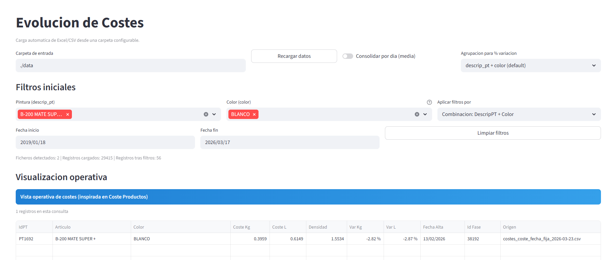
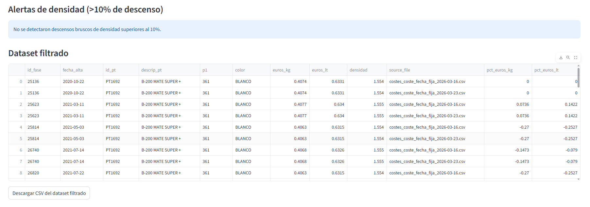

Dentro del entorno industrial existe una necesidad clara: disponer de una herramienta centralizada, trazable y operativamente robusta para analizar de forma continua la evolución de costes de formulación y producción. Cuando esta información queda fragmentada en varios archivos, sin un control estructurado de versiones ni una lectura temporal ágil, se dificulta la toma de decisiones técnicas y económicas.
La propuesta consiste en una aplicación web desarrollada sobre Streamlit que integre en un único entorno los datos históricos de costes y permita tratarlos, visualizarlos y analizarlos dinámicamente.
La herramienta permite monitorizar la evolución de costes en el tiempo, identificar desviaciones relevantes y analizar el impacto de modificaciones en formulación o en condiciones de producción.
El valor de la herramienta no está únicamente en visualizar datos. Está en crear una base técnica que permita pasar del seguimiento disperso a una lectura continua y útil de la evolución de costes, sus desviaciones y su relación con cambios de fórmula y de proceso.


